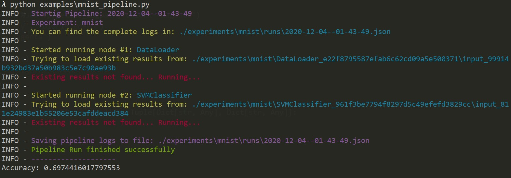
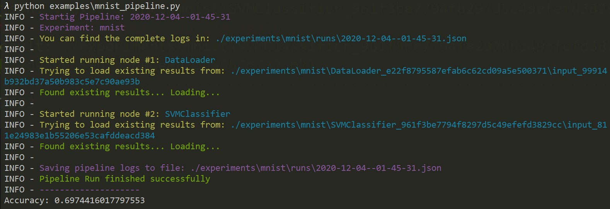
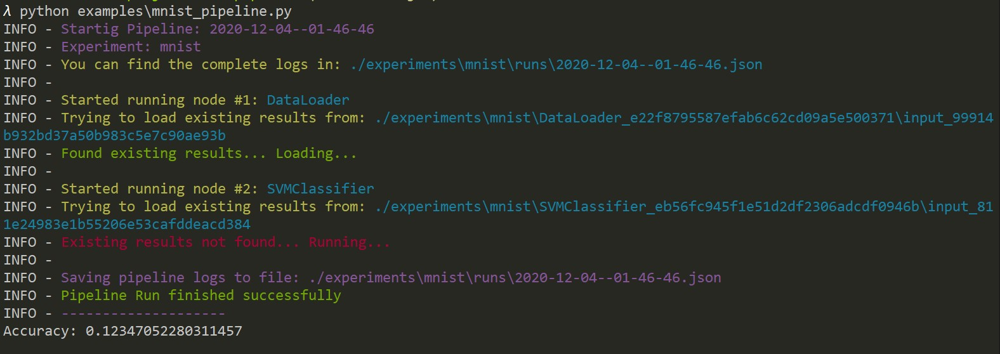

FastPipeline
Persistent, easy to use, fast to code
Documentation: https://shashank-yadav.github.io/fastpipeline/
Source Code: https://github.com/shashank-yadav/fastpipeline
FastPipeline is a framework for creating general purpose pipeline in your ML projects. It helps in keeping track of your experiments by automatically storing all the intermediate data and source code.
The key features are:
- Persistence: Automatically stores all the intermediate data and variables during the run.
- Autoreload: Detects if something has been computed before and reloads it instead of a do-over.
- Accessible Intermediate Data: The intermediate data is stored as pickle and json files, can be easily accessed and analyzed.
- General Purpose: Unlike sklearn pipelines you don't need to format your data into the required X, y format.
- Intuitive: Great editor support. Completion everywhere. Less time debugging.
- Easy: Designed to be easy to use and learn. Less time reading docs.
Installation
$ pip install fastpipeline
---> 100%
Example
Train a classifier over the (in)famous MNIST dataset
- Create a file
mnist_pipeline.py - Make necessary imports and create a class
DataLoaderthat extends theBaseNodeclass from the fastpipeline package. This is something we'll refer to as aNode
# Import datasets, classifiers and performance metrics
from sklearn import datasets, svm, metrics
from sklearn.model_selection import train_test_split
import numpy as np
# Import pipeline and node constructs
from fastpipeline.base_node import BaseNode
from fastpipeline.pipeline import Pipeline
# Node for loading data
class DataLoader(BaseNode):
def __init__(self):
super().__init__()
def run(self, input = {}):
# The digits dataset
digits = datasets.load_digits()
# To apply a classifier on this data, we need to flatten the image, to
# turn the data in a (samples, feature) matrix:
n_samples = len(digits.images)
data = digits.images.reshape((n_samples, -1))
return {
'data': data,
'target': digits.target
}
- Create another
Nodewhose input is output ofDataLoaderand that trains an SVM classifier# Node for training the classifier class SVMClassifier(BaseNode): def __init__(self, config): super().__init__(config) gamma = config['gamma'] # Create a classifier: a support vector classifier self.classifier = svm.SVC(gamma=gamma) def run(self, input): data = input['data'] target = input['target'] # Split data into train and test subsets X_train, X_test, y_train, y_test = train_test_split( data, target, test_size=0.5, shuffle=False) # We learn the digits on the first half of the digits self.classifier.fit(X_train, y_train) # Now predict the value of the digit on the second half: y_pred = self.classifier.predict(X_test) return { 'acc': np.mean(y_test == y_pred), 'y_test': y_test, 'y_pred': y_pred } - Now let's instantiate the nodes and create our pipeline
if __name__ == "__main__": # Initialize the nodes dl_node = DataLoader() svm_node = SVMClassifier({'gamma': 0.01}) # Create the pipeline pipeline = Pipeline('mnist', [dl_node, svm_node]) # Run pipeline and see results result = pipeline.run(input={}) print('Accuracy: %s'%result['acc']) - Run the pipeline using
$ python mnist.py. You should see somthing like:

As expected it says that this is the first run and hence for both nodes outputs are being computed by calling their run method. The log here shows where the data is being stored
- Try running it again with the same command:
$ python mnist.py. This time you should see something different:

Since all the intermediate outputs are already computed, the pipeline just reloads the data at each step instead of re-computing
- Let's make a change to the value of config inside
__main__:# svm_node = SVMClassifier({'gamma': 0.01}) svm_node = SVMClassifier({'gamma': 0.03}) - Run the pipeline again. You'll see something like:

This time it used the result from first node as-is and recomputed for second node, since we made a change to the config.
If you make any changes to the class SVMClassifier same thing will happen again. To learn more about this you can look at About section
The logs of a pipeline run are saved as json files and are of the form yyyy-mm-dd--hh-mm-ss. For us the one generated in the final run is: 2020-12-04--01-46-46.json
{
"id": "2020-12-04--01-46-46",
"nodes": {
"1": {
"config_json_filepath": "./experiments\\mnist\\DataLoader_e22f8795587efab6c62cd09a5e500371\\config.json",
"node_dir": "./experiments\\mnist\\DataLoader_e22f8795587efab6c62cd09a5e500371",
"node_hash": "e22f8795587efab6c62cd09a5e500371",
"node_name": "DataLoader",
"object_code_filepath": "./experiments\\mnist\\DataLoader_e22f8795587efab6c62cd09a5e500371\\DataLoader.py",
"object_pickle_filepath": "./experiments\\mnist\\DataLoader_e22f8795587efab6c62cd09a5e500371\\DataLoader.pkl",
"result_filepath": "./experiments\\mnist\\DataLoader_e22f8795587efab6c62cd09a5e500371\\input_99914b932bd37a50b983c5e7c90ae93b\\result_811e24983e1b55206e53cafddeacd384.pkl",
"reused_result": true
},
"2": {
"config_json_filepath": "./experiments\\mnist\\SVMClassifier_eb56fc945f1e51d2df2306adcdf0946b\\config.json",
"node_dir": "./experiments\\mnist\\SVMClassifier_eb56fc945f1e51d2df2306adcdf0946b",
"node_hash": "eb56fc945f1e51d2df2306adcdf0946b",
"node_name": "SVMClassifier",
"object_code_filepath": "./experiments\\mnist\\SVMClassifier_eb56fc945f1e51d2df2306adcdf0946b\\SVMClassifier.py",
"object_pickle_filepath": "./experiments\\mnist\\SVMClassifier_eb56fc945f1e51d2df2306adcdf0946b\\SVMClassifier.pkl",
"result_filepath": "./experiments\\mnist\\SVMClassifier_eb56fc945f1e51d2df2306adcdf0946b\\input_811e24983e1b55206e53cafddeacd384\\result_9eab81159e86abf42ac527566644e927.pkl",
"reused_result": false
}
}
}